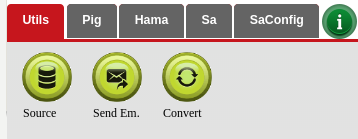
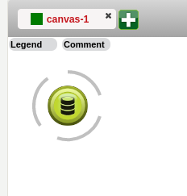
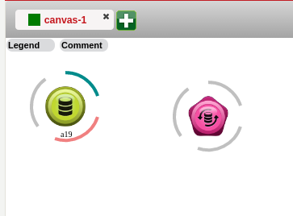
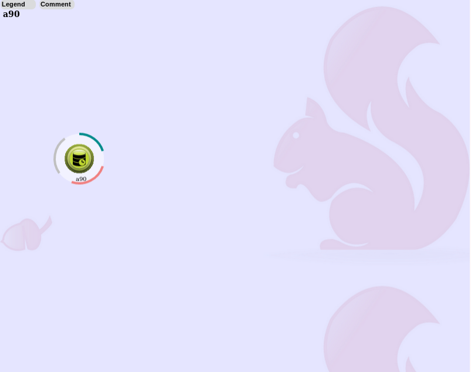
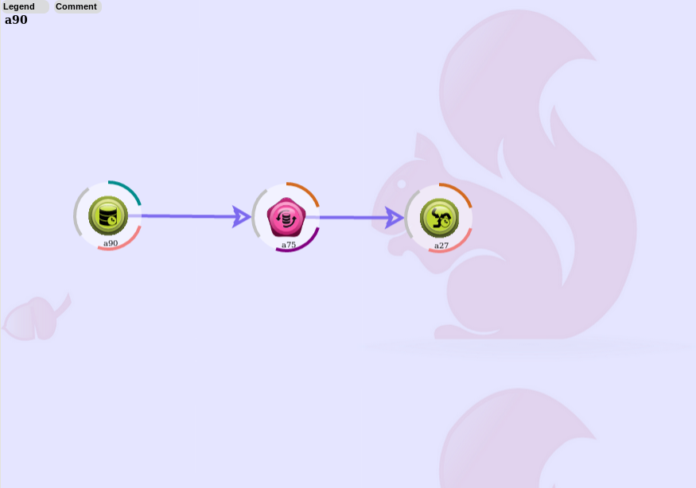
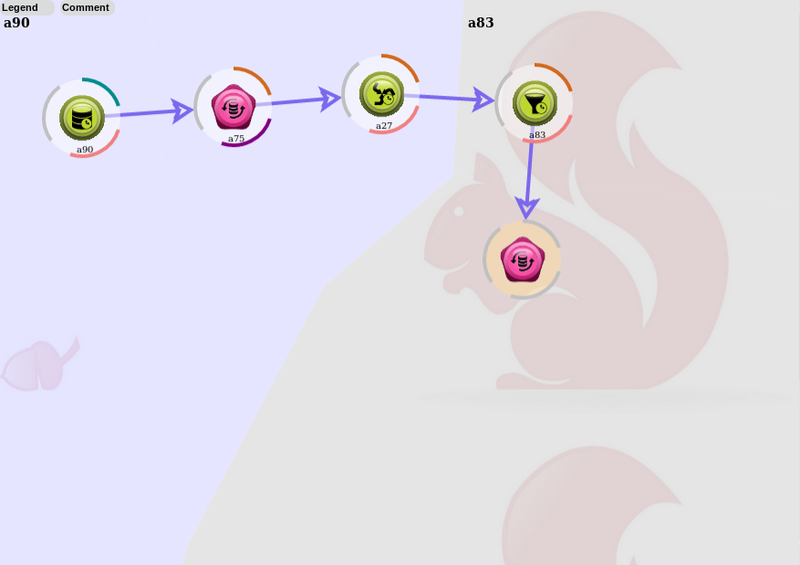
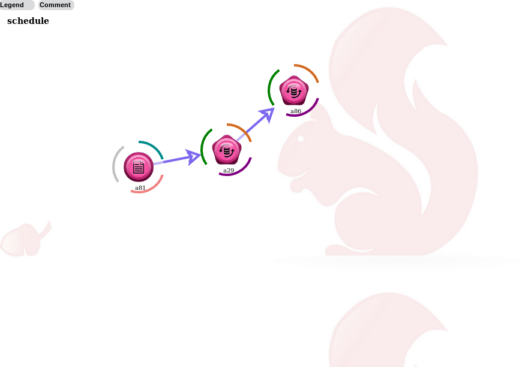
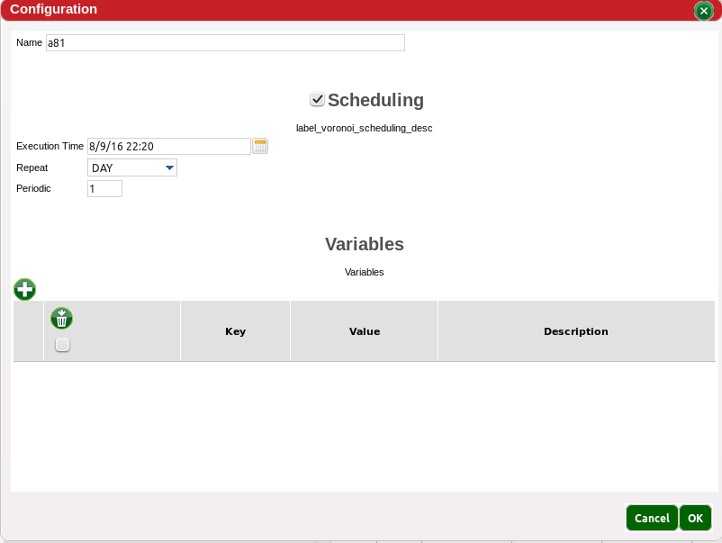
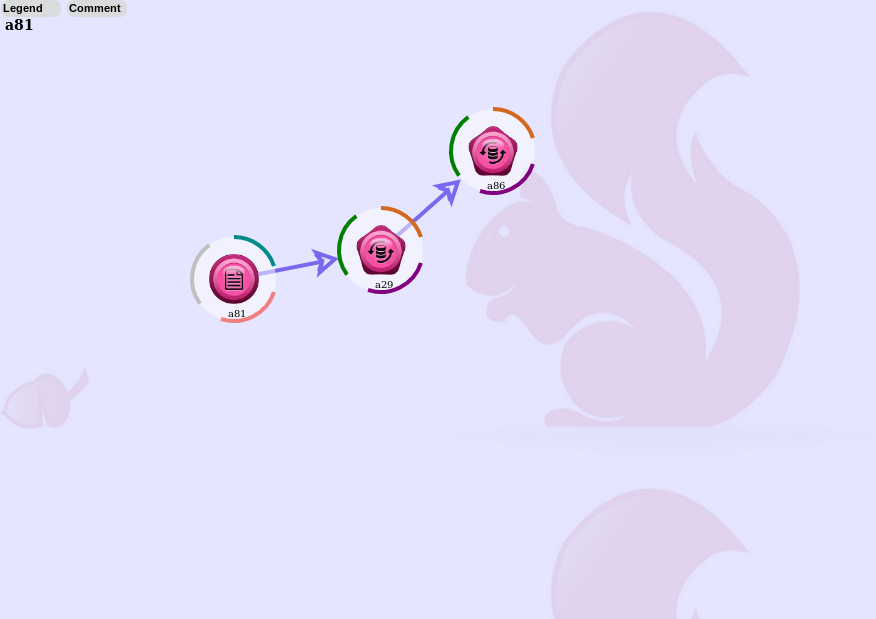

The initial step in builidng a workflow is to add/drag a source to the canvas, from there the source configuration must be complete. The Source Help File shows step by step
Adding the source and configuring it means that actions can be added and linked to the Source. Depending on the action more than one source may be needed. Read each action help file to learn how to use the action.
|  |  |
|  | |
Actions can be linked together depending on the action type and output. This will lead to building workflows that may be quicker than running multiple workflows.
When the workflow is ready to run, the menu holds the option to run the project under Projects.
When scheduling a workflow, it is recommended to use synchronous dataset, as it will help keeping a history and allow rerun in case of process or data changes, asynchronous dataset can be used as a quick fix or when the data is not available on HDFS.
For Synchronous dataset, the three synchronous object should be used.
|  |  |
|  |
For Asynchronous dataset, use the coordinator view
|  |  |
|  |
This section list all the tutorials we have on Red Sqirl. The sources needed to complete those tutorials are in the Red Sqirl installation folder and on the Red Sqirl documentation website under the files folder. In order to access it, you can go to the Remote File System tab, connect to localhost and go to Red Sqirl installation path as explained in the first part of the Apache Pig tutorial.
return to Red Sqirl help